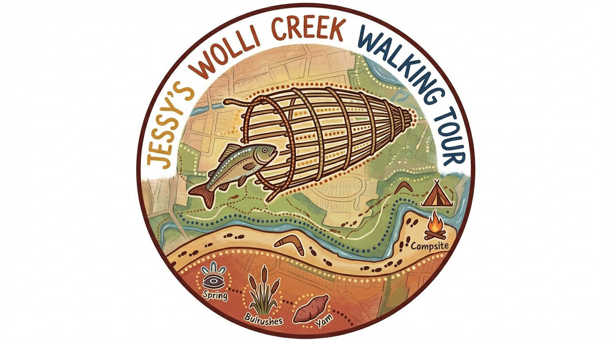
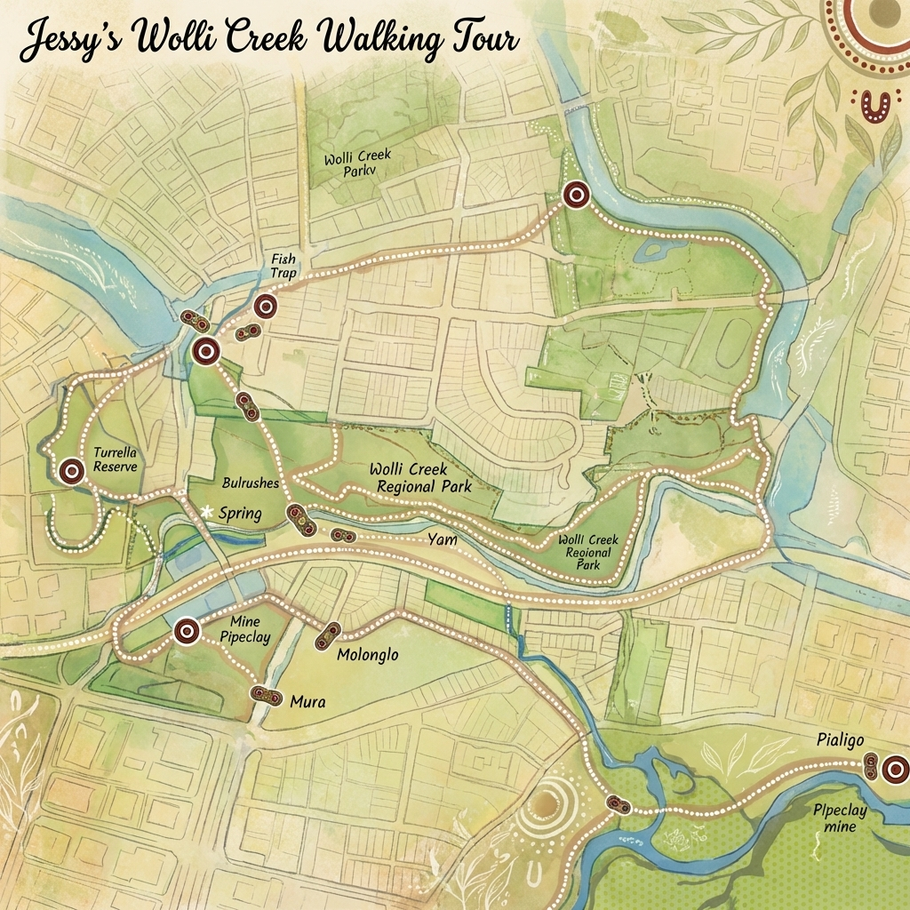

Bidjigal & Dharawal Country · Inner West SydneyWalk the Valley.
Hear the Stories of Country.
Wolli Creek Valley · Est. 2025
"I would like to create the opportunity for Sydney to showcase the rich natural history of the Eora nations people on Country — sharing bush foods, ancient cave paintings, and the living knowledge of our ancestors." — Jessy Haiyang, Guide & Founder
What You'll Experience
Ten landmark stops through the Wolli Creek Valley — each with its own story, ecology, and connection to Country.
Ancient Cave Paintings
27 hand prints & 2 feet prints from the Bidjigal and Dharawal artists — up to 6,500 years old.
Bush Foods & Medicinal Plants
Native edible plants, medicines and trees of cultural significance — used for tools, canoes, and healing.
Grey-headed Flying-fox Colony
Australia's largest bat — a colony of national importance roosting in the Wolli Creek Valley.
Ochre Rock Mine
Yellow, white and orange sandstone ochre — the very pigments used to create the valley's cave paintings.
Tidal Salt Water Marshlands
Ancient tribal meeting point at Wolli Creek and Cooks River — once teeming with shellfish.
Bush Regeneration Sites
See active native planting and weed removal — 5% of tour income goes directly to Valley regeneration.
Jessy Haiyang
Descendant of the Bidjigal and Iningai people of south central Queensland, Jessy has lived in Marrickville for six years and based her Diploma of Conservation and Land Management on the Wolli Creek Valley itself. Her deep knowledge of flora, fauna, and the cultural history of the Eora nations people shapes every step of the tour.
Read Jessy's Story →

Join a Guided Tour
Tours depart from Tempe Station Carpark · Small groups · 3.5 hours · All abilities welcome